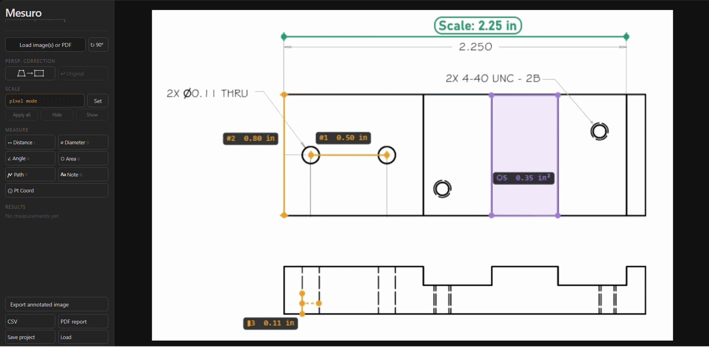
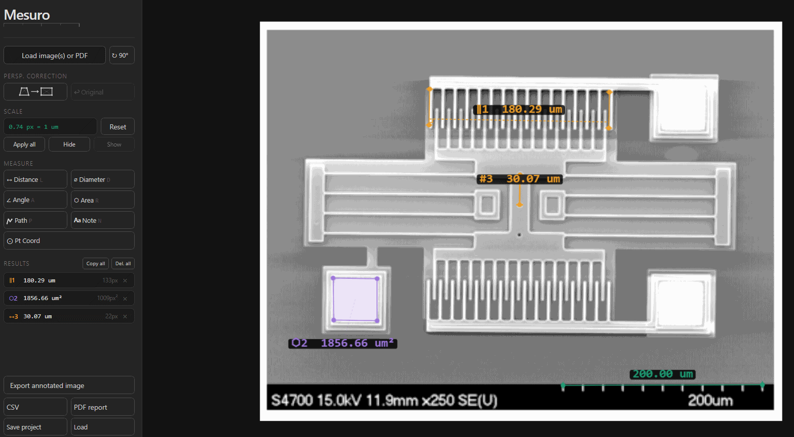
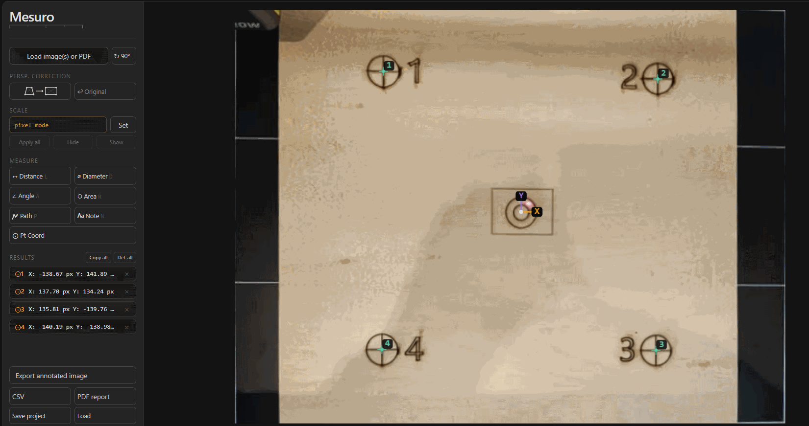

Load image or PDF
Open photos, technical images, or PDF pages directly in the browser.
Technical image and PDF measurement
Calibrated browser-based measurement for technical workflows. No upload. No account required.

Users usually arrive with a job to do, not with a category name. Start from the workflow that matches your work.
The workflow is intentionally short so repeat use stays fast.
Open photos, technical images, or PDF pages directly in the browser.
Calibrate from a reference line, scale bar, or known dimension.
Measure distances, angles, areas, paths, diameters, or coordinates.
Download annotated images, PDF reports, CSV data, or a reusable project file.
Mesuro is meant to feel like a precise utility, not a platform.
Your files stay on your device during measurement.
Measure technical PDFs and multi-page documents directly.
Convert pixels into real-world units from a known reference.
No install, no account, no setup sequence before the work starts.
Annotate, save, and export without leaving the workflow.
A few common ways calibrated image measurement fits into technical work.

Calibrate from a visible scale bar, apply the same scale across matching images, and export annotated results for review.
View microscopy workflow →
Review exported drawings, measure geometry, and annotate dimensions without opening a full CAD workflow.
View CAD drawing workflow →
Check laser engraving calibration, coordinate offsets, and repeated setup alignment from real output images.
View industrial workflow →
Measure room areas, wall lengths, and openings directly from scaled floor plans.
View floor plan workflow →
Use a known object in the same photo to set scale, then measure nearby items in real units.
View photo measurement workflow →